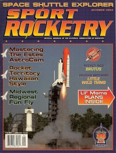
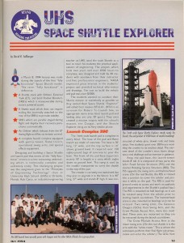
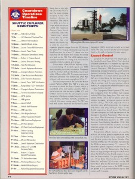
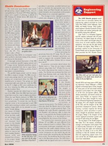

Here are a few photos of the 1:40 Space Shuttle. It originally flew in 1994 at University High School in Orlando Florida. I designed the flying parts and the High School students did the pad/tower. It was a great project and I made some great life-long friends. For the boring details, see the Story here or click the pull-down tab above. After years of procrastinating, I finally converted a bunch of old VHS tapes to digital format and have done some simple editing to be able to post them on the internet. (updated Nov, 2011)
{kind=link}
{kind=link}
Here are the videos. I struggled with the formatting so the description is actually above each video. The first one is some glide testing of the first 1/40 prototype. The largest one I had flow up to this point was 1/45.
This is the launch pad under construction.
Here are some early rocket tests.
Here are some good close-ups around the pad.
After the big day, we flew again the following weekend for the parents and school staff. I will refer to this as Flight2 with Flight1 being the one for the NASA execs and Media.It was meant to be a big show so it took a little while to get everything ready. I included some of the countdown for fun (edited down significantly) of Flight2. Out best video was of the second flight. We just didn’t think about video during testing or the big Media day so our footage is a little slim.
This is Flight2 again from different angles. Again, I’m calling it Flight2 even though we had flown the stack several times in testing,
Here is Flight2 in slow motion. It goes regular speed for the 20 sec flight then it runs for about 2 minutes. Its pretty neat to see it all happen slowly.
This was the big day. It uses a news clip to show all the ‘good’ clips we had of Crippen. We tried not to walk around with a camera in his face. He and the other Execs were VERY gracious and really left good impressions on everyone.
The school teacher, Rob Catto, won Disney’s ‘Teacher of The Year’ award. They asked us to come fly the Shuttle at Disney the following year. After lots of preparation and practice, we agreed and flew it twice. It was a really big show and the Disney folks treated us like Rock Stars
I hope you enjoyed the videos. This was actually my first attempt at editing video. I’ll gladly take any constructive criticism 🙂
Here is the cover article for the Oct 94 issue of Sport Rocketry re-printed with permission from the NAR (2011). Please be cautious contacting any of the sources cited as the article is 19 years old!
   
{kind=link}
{kind=link}
{kind=link}
{kind=link}
{kind=link}
{kind=link}
Here it hangs in my Family room today with a few other rockets…
{kind=link}
Here is a 2012 variant made from the same parts. A friend talked me into digging the molds out of the attic so he could build one.

Here is a video of it flying….I was the shuttle test pilot but several other people flew it once I had it trimmed out.
Around 3:45 you see three different 747’s with 3 different shuttles take off together. It was a nightmare trying to get video of all those shuttles flying together but we will one day:)
")
I have flown about 12 different R/C Shuttle Orbiter models. My friends and I estimate I have over 1000 shuttle landings on various shuttles from about 1:100 to 1:40 scale. A few of my friends have over 100 on my various shuttles. Its not uncommon to go out and fly 40-50 flights in one day. We always pass the transmitter around and let pilots of all skill levels give it a try! Its is absolutely the most fun I have had flying models over the last 40 years!
Last updated 5/1/2013